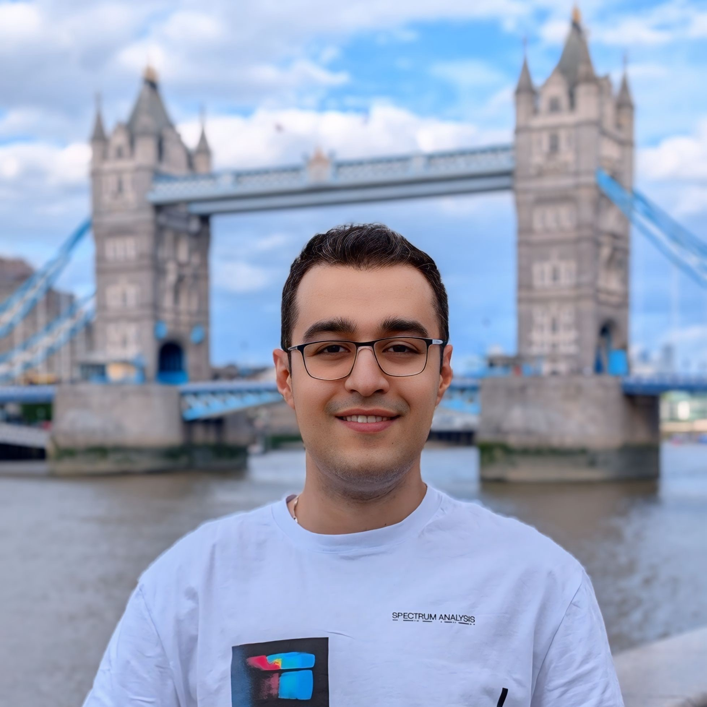

People
PhD Researcher & Academic Teaching Assistant
University of Southampton
Saeid Ekraminia is a civil and geotechnical engineer specializing in infrastructure resilience and asset deterioration modelling. Building upon a good foundation in experimental soil-structure interaction and the structural design of steel and concrete assets, his current research investigates the complex hydro-mechanical effects of climate change on critical infrastructure. Based at the University of Southampton, his work specifically targets how weather-driven parameters, such as rainfall and temperature extremes, impact regional slope stability and railway earthworks.
By integrating advanced statistical models, maximum likelihood estimation, and machine learning pipelines, Saeid develops actionable frameworks that allow infrastructure managers to link climate projections directly to failure probabilities using Markov chains. He works extensively with high-resolution data from major industry partners, including Network Rail and the British Geological Survey, ensuring his methodologies are directly applicable to the operational management of the UK's railway earthworks.